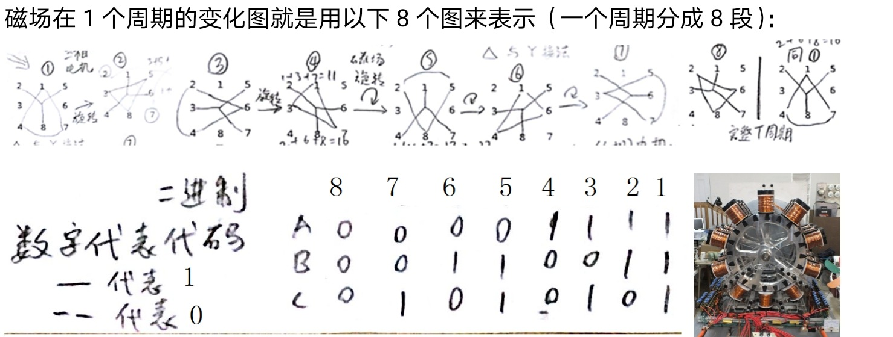

§1 这个场的结构：n² 个格，2n+2 条总线
每个 agent 坐在一个格上，格同时挂在几条“总线”上：所在行、所在列，如果恰好在两条对角线上就再各挂一条。 总线就是协作通道——同一条总线上的 agent 不能同时干活（它们争的是同一种资源）。
| 每格挂几条总线 | 格数（实测） | 闭式 | 占总格数 | 是哪些格 |
|---|
三条闭式，n 奇阶全部成立（页面逐个 n 验过）：
n=5 → 16 + 8 + 1 = 25 格，2·16+3·8+4·1 = 60 = 2·5·6 ✓。 那个“1”永远是中心格——它是唯一挂 4 条总线的格，也正好是全场均值 S/n。 最忙的那个，负载恰好等于平均值。
§2 步进 a：零冲突的判据，和一条“阶级性”的边界
一轮就是一条“线性步进”：第 i 行取第 a·i+b (mod n) 列。b 扫完 n 个值就把 n² 格铺满，
所以覆盖性不用管。要管的是冲突——同一轮里的 n 个 agent 两两不能同行、同列、同对角。
均载（每轮和都 = S） ⟺ 零冲突 且 gcd(1+2a, n) = 1
第二条是从 de la Loubère 的闭式推出来的，不是猜的。把 j = a·i+b 代进
M[i][j] = n·u + w + 1（u=(i+j+c) mod n，w=(i+2j+1) mod n），得
⇒ Σ轮 M = n·Σu + Σw + n = n·n(n−1)/2 + n(n−1)/2 + n = n(n²+1)/2 = S
两个求和各自要等于 n(n−1)/2，前提就是 1+a 和 1+2a 都跟 n 互素（这样 i ↦ (1+a)i 才是双射）。
第一条判据带一个硬边界：n 被 2 或 3 整除，就一个合法 a 都没有。
a−1、a、a+1 是三个连续整数，其中必有一个偶数、必有一个被 3 整除。
所以只要 2|n 或 3|n，那三个数里必有一个跟 n 有公因子 ⇒ 不可能全互素。
也就是说：n 必须与 6 互素（n 奇时等价于 3∤n）。
页面穷举验证：n=3 / 9 / 15 / 21 的合法 a 集合为空；n=5 / 7 / 11 / 13 / 17 / 19 / 25 都非空。 这条证明只覆盖“线性步进”这一族——族外有没有别的切法，本页没穷举，不算。
| a | ×a | 单轮冲突 | 五轮和的最小 / 最大 | 轮和标准差 | 判定 |
|---|
§3 逐轮播放：n 轮 × n 个 agent
下面的表把每一轮的 n 个 agent、它们的格值、以及这一轮的和都列出来。 点播放或在矩阵上拖 b，当前那一行会跟着亮。
| 轮 b | n 个 agent（格值） | 轮和 | 与 S 之差 | 轮内冲突 |
|---|
一个会骗人的假象：只看“和”，a=1 也全是 S。
a=1 时这一轮取的是 (i, i+b)。在环面上它是一条完整的泛对角线；
因为 de la Loubère 是泛对角幻方，每条这样的线和都等于 S，所以“和全是 S”成立。
但 b=0 那一轮恰好就是方阵的主对角（5 个格两两全撞，10/10 对冲突），
其余四轮是环绕折线、也各有 4~6 对冲突，五轮累计 30/50。根本不能并发。
所以“均载”必须和“零冲突”一起看。只用一个指标会得到完全相反的错误结论—— 这也是为什么判据要写成两条而不是一条。
§4 掉一个 agent：波及哪几条总线
格 (i,j) 掉了，挂在它上面的每条总线都会从 S 掉到 S−v。掉几条、掉多少，都能当场算——不用探测，拓扑是死的。
| 总线 | 类型 | 原和 | 掉后 | 缺口 |
|---|
波及可预知，但没有替身。
平均波及 2(n+1)/n 条总线（n=5 是 2.4/12 = 20%），最坏是中心 4 条 = 33.3%。 完全均衡 = 零冗余：数字 a 的补数 26−a 只能用一次，凑不出第二条和 S 的线，所以掉一格就是掉一格，没有自愈。
结论：这个场适合“每轮重算”的批式协同，不适合在线容错。它的价值在于波及范围可以事先算出来， 而不是“掉了也不怕”。
§5 相干度 R：跟 a 无关，只跟规模有关
R 是“某一瞬间全体 agent 相位整齐”的程度：R = maxτ |(1/N)Σk exp(i(φk + 2πkτ))|，
相位取格序 φ = 2π(i·n+j)/n²。它由幻方本身决定，换步进 a 一点都不动。
R 随 n 单调上升，1−R 严格按约 8.17/n² 收敛。翻译成人话：
- 规模扩大不带来多样性。agent 越多，“某一瞬间全体同相”越容易。
- 好处：一次对齐就能全体行动，协议成本极低。
- 坏处：一次扰动也会全体同向——多 agent 系统的“群体思维 / 幻觉共振”。
- 所以agent 越多越必须刻意去相，因为可偏离的空间按 1/N 缩小。
下面三节就是把这句话拆成能算的东西：§6 先说清「相位分配」到底有没有用，§7 把「稠密」和「均匀」 拆成两个指标，§8 回到四个数（浑天仪四摆），给出两个互不干扰的旋钮。
§6 刻意去相（一）：相位是免费的，频率才是命门
要破 §5 的 R，最直觉的办法是给每个 agent 各发一个不同相位——黄金角 2π{kφ}
是最常被推荐的那个。这一节把它放到秤上：换相位，到底改不改得动「某一瞬间全体同相」。
A = 1 ⇔ 全体同相 ｜ A ≈ 1/√N ⇔ 完全散开（N = 25 时 1/√N = 0.200）
| 频率规则 | 相位规则 | 峰值 A | rms | 对齐次数 A ≥ 0.90 | 判决 |
|---|
前五行峰值全部是 1.0000 —— 一个都没降下来。
原因不在相位，在频率：只要 fk 是等间距的（fk = k·d，d 取多少都行）， 就必然存在时刻 t = m/d 使所有 2πfkt 同时是 2π 的整数倍 —— 全体精确对齐， 与 d 是不是黄金比毫无关系。相位只做两件事：把这次对齐挪到别处（表里第 5 列的次数跟着从 9 变到 4）， 以及决定它在 8 个周期里落在哪一刻。
真正降下来的只有两种非等间距的频率集：黄金角 —、 随机 —。差别不在"用不用 φ"，而在频率还等不等间距。
这才是"学黄金比数列"该学的地方。
黄金比拿去做相位：无效（峰值仍是 1）。
黄金比拿去做等间距的间距 d（fk = (k+1)φ）：也无效。它只把对齐周期从 1 拉长到
1/0.618 ≈ 1.618 个基周期 —— 对齐次数确实变少了，但一次都没消除，峰值还是 1.0000。
黄金比拿去做低差异序列生成频率集 fk = 0.1 + 0.9·{kφ}：有效，
峰值从 1.0000 掉到 —，比随机频率集的 — 还低 40%。
一句话：φ 的价值在"分布"，不在"比值"。它保证 N 个点在区间里铺得最开（三距离定理）， 所以合矢量最短；这跟"把两个数写成 89:55"是两件事。
§7 刻意去相（二）：李萨如的「稠密」和「均匀」是两个指标
您那份《两个数如何使李萨如图布线最稠密，间隙最均匀》里有两个观察：比值越接近黄金比越密、 两数差为奇数比偶数密。这两个观察对不对，取决于量的是哪一个。先把两个指标分开：
稠密 ~ L/R₀：曲线总长 ÷ 外接半径（和浑天仪那把密度尺是同一把，越大越密）
均匀 ~ 最大空洞：每个格心到曲线的最近距离，取最大值（越小越匀）
| a : b | 比值 | 差 | gcd | L/R₀ | 最大空洞 | 判读 |
|---|
「差为奇数更密」这一条，实测成立 —— 而且原因能算出来。
同规模对照（转的圈数几乎一样）：177:110（差 67，奇）L/R₀ —、空洞 —； 177:109（差 68，偶）L/R₀ —、空洞 — —— 差奇的那组明显更匀。
机制：差为偶 ⇔ 两数同奇或同偶。同偶就必然 gcd ≥ 2，曲线直接退化（下面那张表）；同奇则曲线中心对称—— t 与 t+1/2 映到 (−x, −y)，后半圈只是前半圈转 180°，白画一半。 差为奇则必是一奇一偶，只做镜像（关于一根轴对称），不重复一遍。 所以"差偶更差"是这两个坏情形合起来的结果，不是"奇偶"本身有什么魔力。
更硬的变量是 gcd。三组数规模几乎相同（L/R₀ 都在 620~630），只改 gcd：
| a : b | gcd | L/R₀ | 最大空洞 |
|---|
gcd 从 1 涨到 10，L/R₀ 几乎不动（— → —，画出来的线一样长）， 空洞却涨了 — 倍。gcd 不改变"画了多少"，只改变"摊得匀不匀"—— 稠密和均匀从头到尾就是两个指标。
为什么会"越接近 φ 越均匀"？有定理，不是玄学。
a:b 有理 ⇒ 曲线闭合 ⇒ 它是一条有限长的闭曲线，再画多少遍都还是那一条 ——
所以间隙有地板（空洞不会越画越小）；无理 ⇒ 永不闭合 ⇒ 在正方形里稠密（Kronecker）。
而在所有无理数里，φ 的连分数是 [1;1,1,1,…]，部分商全为 1，收敛最慢——
也就是说任何有理数都"逼近得特别准"，反过来讲，它的轨道在有限时间内最不容易扎堆。
这就是"最均匀"的严格来源，也是 Three-Distance 定理那一族结论的核心。
但要加一条限制：这只在规模相同时成立。 34:21 离 φ 只差 0.0010，空洞 —； 177:110 离 φ 差 0.0089（远 9 倍），空洞却只有 — —— 因为 177:110 转的圈数是 34:21 的 5 倍。规模是主因，离 φ 远近是次因； 下一节把这两个旋钮拆开扫。
另外注意：硬件上不存在 φ Hz 的振子。任何真实频率都是有理数， 所以任何真实花纹都必然闭合，只是闭合前要走多久的问题 —— 这正是下一节要算的。
§8 四个数：把「稠密」和「均匀」拆成两个旋钮
李萨如是两个数。浑天仪探索器用的是四个数（四摆）：
和差化积 ⇒ x = 2cos(S/2·t)·sin(U·t) y = −2sin(S/2·t)·sin(V·t)
S = a+d（"线和"） U = (a−d)/2 V = (b−c)/2
这个分解把原来的四个数拧成两个互不干扰的旋钮：
- S 管"多密"：它是包络的转速。S 越大，同一个时间窗里多转 S/4 圈，线总长 L/R₀ 跟着涨。
- U:V 管"什么花样"：把坐标跟着 S/2 一起转掉之后，剩下的
(sin Ut, −sin Vt)就是一个普通李萨如 —— 它的比决定几瓣、闭不闭合。
这是浑天仪 v8 里已经写在代码注释里的东西（"线和相等 ⇒ 两轴包络同速、正交 ⇒ 轮廓定住不漂"）， 本页只是把它和 §5 的 R、§7 的表接了起来：
▶ 对照页：浑天仪探索器 v8 （四相数 / 任意 n 阶幻方 / 盘面密度体检 L/R₀ / 3D 三轴六频）。本节用的就是它的公式和密度尺。
8.1 把您 docx 里那几个阶的四象限合数，代进四摆
| 阶 | 四象限（左上,右上,左下,右下） | S = a+d | b+c | U | V | |U|:|V| | L/R₀ | 空洞 | 判读 |
|---|
零相位档下，您那三组偶数阶的四象限合数代进四摆全部退化成一个点。
6 阶 147/186/186/147、6 阶 177/138/138/177、18 阶 13839/12486/12486/13839 ——
它们都是对角对称的（左上 = 右下、右上 = 左下），于是 a = d、b = c，相位又全 0，
代进上面那条分解就得到 U = V = 0，x = sin(at) − sin(at) = 0，
y = cos(bt) − cos(bt) = 0。R₀ = 0，这一档没有图形可谈。
这不是操作失误，是数学必然：n ≡ 2 (mod 4) 的单偶阶幻方是 180° 旋转对称的，四象限必然对角相等。
浑天仪 v8 里对 n=6/10/14 这一档已经写着同样的结论。
四象限合数只能当"比值"用，不能当"四个频率"用。
但这不是终点：下一节 8.2 只加相位、不动频率，就能把这三组全部救回图形。
但奇数阶的三组能出图，而且和您 docx 里算的「对角线差之比」一字不差。
3 阶 17/19/21/23 → U:V = 3:1；5 阶 100/116/118/134 → 17:1；
7 阶 356/396/404/444 → 44:4 = 11:1。
这三个数就是您文档里写的「对角线两数与平均数的差之比 = 左上右下 : 右上左下 = 3:1 / 17:1 / 11:1」。
您当时量的那个东西，正是 U:V。
而密度与空洞随阶数：3 阶 — → 5 阶 — → 7 阶 —， 单调变密变匀。您说的"越高阶越稠密"，在这里第一次有了数。 但它同时是 S 变大的结果（S = 40 → 234 → 800），两件事在这个例子里是绑在一起的 —— 要看清楚得把 S 和 U:V 分开扫。
8.2 相位：把「一个点」救回一张图
上面那个红框说的是零相位的结论。给四个数各加一个相位，公式立刻变了个样子：
y = cos(bt + φ₂) − cos(ct + φ₃) = −2sin(S/2·t + ν) · sin(V·t + ε)
μ = (φ₁+φ₄)/2 ν = (φ₂+φ₃)/2 δ = (φ₁−φ₄)/2 ε = (φ₂−φ₃)/2
δ、ε 是新拧出来的两个旋钮，而且它们和 U、V 完全是两回事 —— 一个进「频率」，一个只进「振幅」：
U ≠ 0（奇数阶）：相位完全无效。
sin(Ut + δ) 只是把参数沿 t 平移了一下，t 照样把整条曲线走遍，
轨迹这个集合一点没变。实测 L/R₀：3 阶 — → —、
5 阶 — → —、
7 阶 — → —，
相对变化都在 0.02% 以内（纯数值采样误差，不是图形变化）。
U = 0（偶数阶）：相位就是那个救命的。
sin(Ut + δ) 退化成常数 sin δ，于是
x = 2sinδ · cos(at + μ) ——
从「两个同频相减抵消成 0」变成「一个纯简谐」，振幅正好 2|sin δ|。
只有 δ 落在 0 或 π（也就是原版全 0 那一档）振幅才是 0，其余任何相位差都能出图。
这就是您说的那条路：不动频率，动四个数的相位关系。 面板上「四摆相位」给了五个档，从「对照」到「能看」到「故意压扁」都有：
| 相位档 | δ/π | ε/π | x 振幅 | y 振幅 | R₀ | L/R₀ | 空洞 | 判读 |
|---|
表 8 里有一件事值得单独拎出来：anti 档和 quad 档的 L/R₀ 一模一样。
这不是巧合，是上面那条公式的直接后果 —— δ、ε 只进振幅，不进频率。 两档给出的是同一个 147 : 186 李萨如，只差一个 √2 的整体缩放； 而 L/R₀ 是「线长 ÷ 半径」，尺度无关，所以一位不差。 反过来说：相位档决定画面被拉成什么长宽比，决定不了花样本身，花样只由 (a, b) 定。
所以「调相位」的准确说法是：把退化的 0 换成 2|sin δ|，顺带调了纵横比。 对轴反相（δ = ε = −π/2）两轴都满幅 2，是最中正的一档； 半反相（δ = −π/4、ε = −π/2）振幅 1.41 : 2，图会被压成扁的一条。
但有一条得说清：这不是「圆」，也不是「环」。
偶阶救活之后得到的是 147 : 186 的稠密李萨如（互质后 49 : 62）， 它会把方框填满，既不是圆也不是同心环。要真正的圆必须 a = b， 而幻方四象限永远不会给出 a = b —— 那要求左上和右下两块合数相等， 跟「对角相等」是同一件事，一相等就退回零相位退化。
另一个限制：18 阶那组在 anti 档下 L/R₀ ≈ — （16 万点扫描，对 13839 圈仍然欠采样，真值只会更大），已经密到画不出单根线。 相位能救「有没有」，救不了「看不看得清」。 想看结构请切到 6 阶 L2 或 L1 —— 它们的 L/R₀ 在 — 量级，能看清。
8.3 两个旋钮单独扫（这才是可操作的部分）
| S | L/R₀ | 空洞 | U:V | 比值 | 离 φ | 空洞 |
|---|
三条可操作的判据（每一条都能当场算）：
- 要密 ⇒ S 大。S 从 200 加到 2400，L/R₀ 从 — 涨到 —， 接近线性。这就是"线和越大越密"的定量版。
- 要匀 ⇒ |U/V − φ| 小，且 U ≲ S。光接近 φ 不够：U:V = 223:138 离 φ 只差 0.0021， 但在 S = 600 下空洞 —，反而输给 U:V = 144:89 的 — —— 因为 U = 223 已经比 S = 600 的包络"转不过来"了。
- 要可控 ⇒ 用有理比。所有幻方给出的 U:V 都是整数比，必然闭合， 所以花纹必然有限瓣 —— 这正是它"能造、能复现"的原因，也是它"永远做不到无限均匀"的原因。
鱼与熊掌的真正内容，不是"φ 好不好"，而是"φ 造不出来"。
任何真实振子的频率都是有理数（Hz 是实数，但你写不出无理数的铭牌）。
所以 U:V 永远是有理数 ⇒ 花纹永远闭合 ⇒ 空洞永远有地板。
能优化的只有两件事：把这个有理比选得离 φ 更近（连分数下一项），
或者把 S 做大（多转几圈再闭合）。前者受频率精度限制，后者受最高频率限制——这就是"性价比"的数学内容。
所以那份文档最后的结论"Fibonacci 最密但不可操控，幻方四象限可控且间隙均匀"是对的， 只是原因要改一个字：不是"幻方更均匀"，而是"幻方把 S 做大了"。 7 阶的四象限合数 S = 800，比 3 阶的 40 大 20 倍 —— 密度的差距主要来自这里。
§9 从 2D 幻方到 3D 谐波仪：为什么必须换成 n×m
前面 §8 把四个数（四象限合数）喂进四摆，得到的是平面曲线。 要立起来，就得给 z 轴一对频率。这一节说的就是：这对频率只有一个合法来源， 而那个来源在正方形上恒等于零。
9.1 先说清楚：全网没有现成的做法
查了「幻方 → 李萨如 / 谐波仪」的映射，没有任何被采用的标准方法。 最接近的前例是 Barbara Hero 的 Lambdoma（把一张数字矩阵当频率比，再画李萨如）， 但它只做 2D，用的也是格子之间的比值，不是线和。
更重要的是，「线和当频率」这条路在幻方上天生走不通—— 因为幻方的定义就是所有线和都等于同一个数。行、列、主对角、破对角，全是 S。 一个常数喂给三条轴，三条轴就同一个频率，曲线只能缩成一条直线。 这就是为什么 §8 必须绕道「四象限合数」：它故意破坏了"线"这个层级，去取"块"。
还有一种六角幻方（magic hexagon，3 阶 19 格那种）。它没有"行、列"这两个方向， 只有三个相差 60° 的线族，而且同一族里线长不等（3、4、5、4、5、4、3）。所以"线和 → 频率"在它上面 连定义都要重来，本页不做 —— 只做正方形 / 矩形，六角的不碰，也不假装能碰。
9.2 3D 的第三个自由度，恰好就是行和与列和之差
矩形幻方（m×n，m≠n）只有行和、列和两个常数，而且它们必然不相等：
R − C = (n − m)(mn + 1) / 2
把这一对直接接到 z 轴：
(a, b, c, d) = 四象限合数，(R, C) = 行和、列和
于是正方形必然退化：R = C ⇒ sin(Rt) − sin(Ct) ≡ 0 ⇒ z 轴恒等于 0，
图形一定躺平。这不是参数没调好，是恒等式。想要真 3D，网格必须不是正方形。
顺带一个很容易踩的坑：别改成"行平均"。
R 和 C 都很大（3×5 是 40 和 24），看着别扭，很自然会想"那用每行平均数当频率吧"。一改就塌： 行平均 = R/n = (mn+1)/2，列平均 = C/m = (mn+1)/2 —— 两个数是同一个，与 m、n 无关。
所以"和"之所以能用，恰恰因为它带着 n 与 m 的不对称； 一取平均，不对称就被除干净了，z 轴立刻归零。 （这也是为什么 3D 的自由度正比于 |n−m|：它本来就藏在"和"里。）
为什么「3×4」这个直觉上的最小例子不存在。
3×4 用 1…12，总和 78。若 4 列等和，每列必须是 78/4 = 19.5 —— 不是整数，无解。 Harmuth（1881）给出的充要条件是：m×n 幻方矩形存在 ⟺ m ≡ n (mod 2) 且 mn > 4。 3 与 4 奇偶不同，所以 3×4 连一个都不存在。
最小的非方形是 3×5（15 格，每行 40、每列 24）。 面板里我留了 3×4 这个选项，就是为了让您点一下看到它是真的造不出来，不是我懒得做。
9.3 三档映射，各自的死活
| 档 | 映射 | 当前取值 | 结果 | 判定 |
|---|
第 ① 档是「最直觉」的写法，也是错得最彻底的写法 —— 它把幻方最强的那条性质（线和相等） 当成了频率来源，于是三条轴拿到同一个数。幻方的"魔法"恰恰抹掉了频率差异。
9.4 矩形网格逐个体检
下面每一行都是当场造的：局部搜索 + 三项硬核验（1..N 各一次、每行和 R、每列和 C）。 2D 那栏看四象限是否退化，3D 那栏看 L/R₀ 与三平面最大空洞。
| 网格 | N | 行和 R | 列和 C | R−C | 四象限 a,b,c,d | 2D 映射 | 3D L/R₀ | 三平面空洞 |
|---|
读出来的规律（三条，都能当场验）：
① R − C = (n−m)(mn+1)/2，行和列和之差只由阶数决定，跟怎么排格子无关 —— 这条是恒等式，下面自检里逐个体检。
② 奇×奇（3×5、3×7、5×7）两档都不退化，是唯一能同时画 2D 和 3D 的一族。
③ 正方形反过来：四象限可能不退化（奇数阶确实不退化），但 R ≡ C ⇒ 3D 必塌。
2D 和 3D 的可用性，在正方形与矩形之间正好互补。
4×6 那行红字，我要标清楚它是"实测"还是"定理"。
表里 4×6 的四象限出现 a = d、b = c（具体两个数随造法而变，这张是 66 和 84），于是 2D 那档判为退化。 这一条我另外做了 21 次、每次换不同随机种子的构造：4×6 十次、4×8 五次、6×8 六次，21 次全退化。
所以不太可能是单次巧合 —— 但我没有证明它。这里只写 「偶数阶矩形在我试过的每一次构造里四象限都退化」，不写「偶数阶矩形必然退化」。要盖章得有证明，没有就不盖。
另外，这几行的 3D 也不成图：4×6 的六频是 66, 84, 84, 66, 75, 50， x 和 y 各自减去了同一个数，x ≡ y ≡ 0，只剩 z 在动 —— 画出来是一条线段， 不是三维花样。表里我给这几行标了「线段」。
9.5 3D 曲线
画布可以拖：按住左键左右拖改方位角、上下拖改俯仰角。坐标轴长度取 2（各轴满幅）。 红点是 t = 0 的起点。曲线一定闭合——六个频率全是整数，t 走完 1 每个摆都回了整数圈， 不需要截窗、不需要凑周期。
为什么高阶的图会糊成一团 —— 这不是渲染偷懒。
六摆的频率是「和」，而和随阶数按 ≈ mn(mn+1)/2 的规模往上走：3×5 是 R=40、C=24， 5×7 已经是 R=126、C=90。比例越复杂，曲线在同一个包围盒里往返的次数就越多。 密度是映射本身决定的 —— 降采样、调透明度都改不了它穿了多少次，只改变看起来的浓淡。
所以：要看清结构，用 3×5（默认）；要看"稠密"这条性质在三维里兑现成什么样，用 5×9。 这和 §7 那条「密度的差距主要来自规模」是同一件事，只是搬到了三维。
造法说明（不查表，当场造）。m×n 幻方矩形没有像 de la Loubère 那样一行写完的闭式， 文献里的构造是存在性证明，不直接给算法。这里用的是固定种子的局部搜索： 随机铺 1..N，反复交换两格、只保留不增加偏差的交换，收敛后做三项硬核验。 种子由 (m, n) 定死，所以每次打开页面得到的是同一张，可以复查。
代价要说清楚：局部搜索不保证给出好看的排布（ 它不是泛对角、破对角和也不等）。所以上面只用它的行和、列和、四象限这三样—— 这三样是核验过的，泛对角那些性质没有，不冒充。
9.6 一键最优参数
面板上那颗按钮不是装饰。它按四项指标做三步搜索，然后把控件直接设到最优那一组：
| 指标 | 要什么 | 权重 | 用哪个量算 |
|---|---|---|---|
| 去相 | 不许「某一瞬间全体同相」 | 0.40 | 合幅峰值 Amax（§6 的扫描台） |
| 稠密 | 轨迹要铺得开 | 0.30 | L/R₀（线长 ÷ 外接半径） |
| 均匀 | 间隙不能有大洞 | 0.20 | 最大空洞（每格心到曲线的最近距离取 max） |
| 可控 | 必须闭合、能复现 | 0.10 | 频率比是有理数（幻方天然满足） |
还没跑。点上面按钮。
§10 从矩阵到功率级：交错载波与伏秒均分（全部可算）
前九节讲这张矩阵能造出什么花样。这一节换一个问题：把矩阵里的两个数直接接上功率器件，能得到什么、得不到什么。 所有数字都是当场算的，参数在面板「功率级（§10）」那组——拖动任何一个，本节三张表和一整幅曲线立刻重算。
10.1 唯一一条能原样搬过去的：2πk/n 就是载波移相
第 k 个 agent 的起始相位是 2πk/n，整圈均匀错开。电力电子里这有现成名字：载波移相
（phase-shifted carrier PWM，PSC）——N 个并联半桥，三角载波依次错开 T_s/N。
这不是"类比"，是同一个式子：
注意 N 的取法：这里 N 是并联的功率单元数，不是本页的阶数 n（阶数决定 n² 个 agent）。 面板默认把 N 设成 19 只是为了让这个"奇数"的后果显形，两者可以独立。
10.2 纹波的精确式子（比"1/N"细一档）
流传的说法是"N 相交错，纹波降到 1/N"。这句话只在最坏那一点成立，拿它当全程结论会做错选型。 精确式子是（每相电感同为 L、连续导通、忽略寄生电阻）：
N 相交错：ΔIN = (Vdc Ts / (L·N)) · r(1−r)， r = frac(N·D)
这个式子不是查来的，是"斜率 = 导通相数 − N·D"逐段积分得到的，本节末尾有一条判据把它和逐点时域 叠加逐点比对（第 16 组自检）。它给出两类特殊点：
- D = k/N ⇒ r = 0 ⇒ 纹波严格为零。N 个三角波在这点首尾严丝合缝，合成电流是一条平线。 这才是"多相交错"真正的红利所在的位置。
- D = (2k+1)/(2N) ⇒ r = 1/2 ⇒ 取到最大，值为
VdcTs/(4LN)， 等于单相最大纹波的 1/N。所谓"1/N"说的就是这一档。
一个反直觉的必然后果：19 是奇数，D = 50% 不在红利点上。
D = 1/2 时 r = frac(19/2) = 0.5，正好是最差那一档（= 单相的 1/19）。
偶数相（2、4、12）在 D = 50% 处 r = 0，才是严格抵消。
所以"19 相就把纹波压到 1/19"这句话没错，但它描述的是最坏点，不是好处。
真要吃到零纹波，得让工作点落在 D = k/19 上——而工作点由输出电压决定，不是随便可调的。
这一点决定了：选 19 还是选 12，要看你的 D 落在哪儿，不能只看"1/N"。
10.3 把 N 换掉会怎样
| N | N·fs | 最差纹波 (A) | 占 Io | ÷ 单相最大 | D = 50% 时 (A) | 严格抵消的 D |
|---|
最后一列给的是 D = k/N 的前几个值。表里"最差纹波"取 D = 1/(2N)，
是所有 N 都取到最大值的那个点（N = 1 即 D = 50%，回到单相最差点）。
第 5 列应当逐行等于 1/N —— 它是这条式子的自证，不是抄的结论。
10.4 伏秒积均分：幻方在这里才真值钱
并联的工程难点不是纹波，是均流：N 路伏秒积不等就有环流，轻则环流发热、重则炸管。 幻方的行列等和，恰好是一个"分组伏秒积恒定"的离散解。
做法：把当前阶数 n 的幻方格值归一化成占空比 d = v / n²，第 b 轮用一条线上的
n 个格值驱动 n 个单元（v(i, a·i+b)）。因为线和恒为 S：
而每个 agent 在 n 轮里沿着自己那一行跑满全行，所以n 轮累计也恒等：
| 轮 b | d 最小 | d 最大 | Σdi | 总伏秒积 (V·ms) | 输出均值 (V) | 与首轮偏差 |
|---|
必须说清楚的一条：幻方给的是"组和恒定 + 长期公平"，不是"瞬时均流"。
表 15 第 2、3 列就是证据：同一轮里就已经很不均（第 0 轮
0.1200 → 1.0000，相差 8.3 倍）；
跨完 n 轮，每个单元必然经历 1/n²（格值 1）到 1（格值 n²），
相差 361 倍。这在真实功率级上不可接受——单路会瞬间过流。
所以幻方在这里的定位是：给出一个"每轮总伏秒积恒定、每单元长期负载相等"的 占空比调度表，把慢变的失衡（温漂、器件分散、老化）摊平； 快变的瞬时均流仍然必须靠电流环，这是任何调度表都替代不了的。 把这条说成"幻方解决了均流"，就是拿一个慢时间尺度的约束去顶一个快时间尺度的问题。
10.5 代价：交错换来的不是"免费效率"
| 项目 | 单相 | N 相交错 | 机理 |
|---|---|---|---|
| 输出纹波 | ΔI | ΔI/N（最差点）或 0（D = k/N） | N 个三角波相位错开、互相填补 |
| 输出端等效频率 | fs | N·fs | 合成波形的结构在 Ts/N 平移下不变 |
| 器件开关频率 | fs | 仍是 fs（每个器件） | 交错不改单个器件的开关动作，开关损耗不降 |
| 总导通损耗 | Io²Rds | ≈ Io²Rds/N | 电流分流，损耗按平方走 |
| 总开关损耗 | Esw·fs | ≈ 不变或略增 | 器件数变 N 倍，电流变 1/N，两项大致抵消 |
| 磁件 | 1 只大电感 | N 只小电感（每只约 1/N 的伏秒） | 纹波 ↓ ⇒ 感量 ↓，但数量 ↑，体积约 1/√N |
| 低频 EMI | 峰在 fs | 峰搬到 N·fs，fs 段被抵消 | 这是交错对 EMC 的真实好处 |
| 控制 | 1 路 PWM | N 路 + 均流环 | 成本与故障点都在这里涨 |
| 容错 | 单点失效 = 停机 | N−1 降额运行 | 冗余是并联的附带收益 |
这张表里只有第 1、2、4、7 行是"白拿"的；第 3、5 行是明确没有收益的—— 任何把"交错"说成"效率提升"的宣传，都在偷换第 3 行。
10.6 搬不过去的三条（这三条我给不出可算的表）
① "高速同时大扭矩"不可能，这是电压极限椭圆，不是算法问题。
P = T·ω，基速以上必须弱磁，T ∝ 1/ω、功率恒定。想同时要大只有三条路：
抬母线电压、降 Ke（少匝数 / 多极对）、强化散热。第四条不存在，交错也救不了——
它改的是纹波，不是转矩能力。
② "格值当频率"在电机里没有对应物。本页的 fk = k+1 是一组互不成整数倍的独立频率。 电机电流里除基频 ωe 外全是它的整数倍（5、7、11、13 次…），幅值还被绕组系数 kw(h) 压制。 "第 3 个 agent 用 4 倍频"这种自由度不存在，硬要造就得造 N 台独立电机。
③ "自动找最优编码参数"在这里不是组合搜索，是连续凸优化。
MTPA + 电压约束 + 温升约束求 max T，解的是
id = −|i|sinβ、iq = |i|cosβ 下的极值，做的是二维查表 + 在线插值。
幻方的离散枚举在这条路上帮不上忙。它唯一可能帮忙的地方是 SHE-PWM 的初值
（Newton 迭代对初值极敏感），那是另一个问题，本节没做。
§11 八卦 8 状态：这就是 SVPWM 的 8 个矢量，不是类比
这一节把老师《研习真空零点能 关联阴阳八卦》p.149–158 那套「八卦电机」逐条对到标准名词上。 有一条对得严丝合缝，有两处会打穿，有一处是致命的。先立对得上的那条。
11.1 8 个卦 = 三相全桥的 8 种开关状态
三相两电平逆变桥有三个桥臂，每臂只有「上管通」或「下管通」两种状态，一共
2³ = 8 种组合。这 8 种组合就是 SVPWM 的 8 个基本电压矢量：6 个有效矢量
V1…V6（六边形六个顶点）+ 2 个零矢量 V0(000)、V7(111)（原点）。
八卦正好 8 个，三爻正好 3 位——这不是"像"，是同一种结构的两种写法。

怎么看这张手稿：① 8 张草图 = 把一个电周期切成 8 段，
第 k 张画的是三相绕组此刻的通电方向；② 图上标的箭头就是那一段的开关状态
SaSbSc；③ 手写表 A / B / C 三行就是三位二进制，
列号 8…1 是他自己的编号（见下）；④ 右下实物照：这台机器是拿三相无刷永磁电机改的。
注意：8 段每段占 45° 是他的分法 —— §11.4 会说明这个分法为什么必须改成七段式。
编号要小心：他这张表的「1…8」是按二进制从
111 数到 000 编的
（1→111、8→000），既不是先天数、也不是洛书数——这是第三套编号。
而且 p.152 还写成「1 为 000 接正正正」，到 p.153 自己改成「1→111」并注明「注意改一下数字对应的二进制」，
两页的位极性是反的。本页只用一种约定：1 = 上管通（表 17 同此）。
紫 = 有效矢量（产生转矩），绿 = 零矢量（不产生转矩）。老师 p.157 给出的编码 1=010, 2=000, 3=001, 4=110, 6=111, 7=011, 8=100, 9=101，
我逐个验过：8 个值正好覆盖 0–7 全部状态，一个重复都没有，读爻方向也一致（从上往下、阳=1）。
把它接到三相桥上，得到的是下表——每一卦都落在一个标准矢量上：
| 洛书数 | 卦 | 三爻（上中下） | 二进制 | 十进制 | 桥臂 SaSbSc | 矢量 | 产生转矩 |
|---|---|---|---|---|---|---|---|
| 2 | 坤 | 阴阴阴 | 000 | 0 | 0 0 0 | V0（零矢量） | 否 |
| 8 | 艮 | 阳阴阴 | 100 | 4 | 1 0 0 | V1（0°） | 是 |
| 4 | 巽 | 阳阳阴 | 110 | 6 | 1 1 0 | V2（60°） | 是 |
| 1 | 坎 | 阴阳阴 | 010 | 2 | 0 1 0 | V3（120°） | 是 |
| 7 | 兑 | 阴阳阳 | 011 | 3 | 0 1 1 | V4（180°） | 是 |
| 3 | 震 | 阳阴阴 | 001 | 1 | 0 0 1 | V5（240°） | 是 |
| 9 | 离 | 阳阴阳 | 101 | 5 | 1 0 1 | V6（300°） | 是 |
| 6 | 乾 | 阳阳阳 | 111 | 7 | 1 1 1 | V7（零矢量） | 否 |
正名一句：老师说的「5 在中宫、不接正也不接负、能量不动」，指的确实是零矢量； 但零矢量不是 5，而是乾(111) 和坤(000)这两个。洛书里的 5 是九宫中心、没有方位， 它对应的是共模 / 零序分量，不落在任何单个开关状态上。
11.2 打穿一：先天卦数和洛书数是两套编号，不能混用
p.152 写「先天八卦序列 感应 △ 1-2-3-4-8-7-6-5」，用的是伏羲数（乾1 兑2 离3 震4 巽5 坎6 艮7 坤8）； p.157 写「1…9 转二进制」，用的是洛书数（坎1 坤2 震3 巽4 中5 乾6 兑7 艮8 离9）。 两套编号同一串数字指向完全不同的卦：
| 数字 | 先天（伏羲）卦 | 三爻码 | 后天（洛书）卦 | 三爻码 | 两套相同？ |
|---|
最刺眼的一格是 5：在先天里是巽（110），一个有效矢量；在洛书里是中宫，根本没有编码。 混用的直接后果就是——同一个"第 5 段"，一次当 V2 用，一次当零序用，波形对不上。
11.3 打穿二：「1 与 8 对立」在电气上不成立
p.155 说「先天八卦中，对面数字相加得 9」，于是 1 与 8 成对、2 与 7 成对……
这在洛书方位上是对的（对宫 180°）。但如果要拿它做「两套绕组电流反向」（即二进制取反 NOT），
就必须验一件事：对宫是否等于取反。答案是只有 1↔9 一对成立：
NOT(010) = 101 → 坎 1 对离 9 ✓ 洛书对宫也是 1↔9
NOT(000) = 111 → 坤 2 对乾 6 ✗ 洛书对宫是 2↔8（艮）
NOT(001) = 110 → 震 3 对巽 4 ✗ 洛书对宫是 3↔7（兑）
NOT(110) = 001 → 巽 4 对震 3 ✗ 洛书对宫是 4↔6（乾）
所以要做「驱动绕组通 S、拾取绕组通 S̄（磁通反向）」，配对必须用 1↔9、2↔6、3↔4、7↔8，不能用 1↔8、2↔7。用错了不是"效果差一点"， 而是两套绕组的磁动势不反相，抵消不掉、还多出一组负序。
顺带一个好消息：p.152 那两条序列 1-2-3-4-8-7-6-5 与
8-7-6-5-1-2-3-4，按先天数换成三爻码后，桥臂切换数合计都是 10、
单步最大 2、没有一步同时切三个臂——比"纯二进制递减"（合计 14、有 2 步切三臂）干净得多，
说明老师排这两个序列时确实有直觉。但它还不是最优：格雷码能做到合计 8、单步恒为 1。
11.4 致命的一处：8 段等分 = 每转若干个转矩真空
这是全文最要紧的一条。两个零矢量不产生转矩。如果按「一个周期分成 8 个等长的通段」， 乾、坤各占一整个 45° 段，那 1/4 的时间（2/8）转矩直接掉到零——不是纹波，是断崖。 注意平均转矩只掉到 76.5%、而不是 2/8 暗示的 75%：因为有效段被压缩到 45°， 段内平均值反而比 60° 时略高（1.688 vs 1.654），两个效应部分对冲。
| 方案 | 段宽 | 转矩峰值 | 转矩谷值 | 脉动 | 平均转矩 | 定位 |
|---|---|---|---|---|---|---|
| 三相六步（120° 导通） | 60° | 1.732 | 1.500 | 13.40% | 1.654 | 标准做法，可用 |
| 8 段等分（乾/坤各占 45°） | 45° | 1.688 | 0 | 100% | 1.266 | 只剩 76.5%，每转 46 次掉转矩 |
| 8 段但零矢量不占段（七段式） | 60° | 1.732 | 1.500 | 13.40% | ≈1.654 | 正确用法：零矢量切成两半塞在段两端 |
老师 p.154 自己写了「保持三组线圈切换时没有汲取停顿时间」——说明已经察觉到这个问题， 只是没用「零矢量占比」这个口径把它固定下来。正确做法就是 SVPWM 七段式： 零矢量不单独占一段，而是劈成两半放在每段两端，总时长可以压到任意小（实际就是死区量级）。 这样 8 个卦全都用上，但只有 6 个产生转矩，另外 2 个只负责续流。
11.5 换相序列的桥臂切换数（这是可以优化的）
换相那一步要动几个桥臂，直接决定共模电压跳变和 EMI：切 1 个臂共模只跳 Vdc/3， 切 3 个臂（三相同时反向）共模跳满 Vdc，而且死区误差三相叠加。所以"每步只切一个臂" （格雷码）是硬指标。面板上「换相序列」那个下拉就是当场换、当场重算：
| 序列 | 三爻码 | 每步切几个臂 | 合计 | 单步最大 | 三步同切 |
|---|
—
§12 双三相：△/Y 天生 30°，而载波必须错开 T_s/2
老师说「△ 接法线圈是汲取，Y 型为驱动，时间上是同步的」。这句话里「同步」两个字是关键： 如果理解成「同时导通」，两套绕组会互相抵消到零转矩；如果理解成「错开半个载波周期」， 那就正好是成熟的双三相（dual three-phase, DTP）结构。差别就在这半个周期上。
12.1 30° 是白送的：△ 与 Y 的相位差
同一台三相桥供电：Y 绕组的相电压 = 线电压 / √3，相位滞后线电压 30°； △ 绕组的相电压 = 线电压。所以两套绕组挂在同一个桥上时，相电压之间天然差 30° 电角—— 这正是 DTP 双绕组要求的空间相移，不需要额外设计。老师的直觉摸到了这一点。
12.2 但匝比必须按 √3 配，否则一套先烧
30° 是免费的，匝比不是。要让两套绕组的每匝电压相等（否则一套磁密过高先饱和、电流全跑到另一套），
必须 N△ = √3 · NY。面板「匝比」那个下拉换一下，下表当场变：
| N△/NY | △ 每匝电压 | Y 每匝电压 | 失配比 | 后果 |
|---|
12.3 同时导通 ⇒ 磁动势相消（这一条必须画出来）
两套绕组同槽、同相轴时，通大小相等、方向相反的电流，气隙磁动势是
ΣMMF = iN + (−i)N = 0——不是"抵消一部分"，是干干净净的零。
下图就是两种驱动方式的差别：
所以「汲取和驱动的时间同步」必须重新定义：同步 = 同一个电周期内两套都在工作，
但载波错开 Ts/2。这也正是 §10 的载波移相——幻方在这一层直接接得上，
因为 §10 讲的 N=2 交错就是错开半个周期。
12.4 真正的收益不是"纹波减半"，是转矩脉动从 13.4% 降到 3.4%
很多人把双三相的好处说成"纹波降一半"。那只说到表面。真正值钱的是换相台阶数翻倍：
三相每个电周期 6 步、每步 60°；双三相（两套差 30°）等效 12 步、每步 30°。
转矩脉动的规律是 1 − cos(段宽/2)：
| 相数 | 每周期步数 | 段宽 | 脉动 = 1−cos(段宽/2) | 说明 |
|---|---|---|---|---|
| 3 | 6 | 60° | 13.40% | 标准三相六步 |
| 6（双三相） | 12 | 30° | 3.41% | 脉动降到 1/3.9，这才是双绕组的真实红利 |
| 12 | 24 | 15° | 0.86% | 继续翻倍，但器件成本翻倍，边际收益递减 |
这条规律同时也是 §13 的入口：12 相已经是 15° 一步，和「24 段」那个 15° 刻度撞在一起了。
§13 24 段：能当粗刻度，不能当 SHE 的解
老师说「一个周期分 8 段，每段分 3 小段」，就是 24 段 = 每段 15°。上一节刚算过 15°/段对应的脉动是 0.86%。 这一节回答：这个 15° 刻度能不能直接拿去给 SHE-PWM 当初值？ 实测答案是：不能，差得很远。但它的真正用处我找到了，也在下面。
13.1 SHE-PWM 在解什么
选择性谐波消除（SHE）不去改开关频率，而是挪开关角，让某几次谐波在傅里叶积分里正好抵消。 四分之一波对称下，第 h 次谐波的幅值只跟开关角 αk 有关：
N 个开关角能消掉 N−1 个谐波，剩下 1 个自由度用来控基波。所以 N=5 可以消 5、7、11、13 次， 但必须解一组 5 元超越方程——这就是它对初值极敏感的原因。
13.2 实算：四档调制比的角度与残余谐波
下表是我离线用阻尼 Newton + 随机多起点（固定种子，2500 组起点）求出来的， 页面只做复算（把角度代进上式验残差），不在这里跑求根器——求根器不稳的东西不该摆在页面上。 面板「SHE 调制比 M」换一档，下表和右边谐波谱立刻重算：
| M | α₁ | α₂ | α₃ | α₄ | α₅ | 基波 b₁ | 高次 HDF | 同一支？ |
|---|
HDF = 17…49 次里最大的 bh/b₁（已含 1/h 因子）。
M 从 0.6 到 0.95 是同一支连续解：角度单调左移，HDF 单调下降 0.696 → 0.375。
M=0.4 掉到另一支（角度变成 48.7/51.1/67.6/72.1/87.0），HDF 反而升到 0.93——解不唯一，而且差的这一支更差。
13.3 拿 24 段的 15° 网格当初值，实测三种取法全部不收敛
这是本节最实在的一条。老师那套「8 段 × 3 小段」给的是 15° 的网格点 （7.5°/22.5°/37.5°… 或 15°/30°/45°…）。把它们直接当 α 的初值丢进 Newton，结果：
| 初值来源 | 初值 ° | 结果 | 为什么 |
|---|---|---|---|
| 24 段【中点】 | 7.5 / 22.5 / 37.5 / 52.5 / 67.5 | 不收敛 | 均匀网格对应的基波太大（≈ M=1.4，已进过调制区）， 而 M=0.8 的真解是「窄脉冲对 + 大空白」形态，两者不在同一个收敛域 |
| 24 段【边界】 | 15 / 30 / 45 / 60 / 75 | 不收敛 | |
| 均匀压缩 18/36/54/72/81 | 18 / 36 / 54 / 72 / 81 | 不收敛 | |
| 随机多起点 | 2500 组均匀随机 | 258 个合法解 | 只有"撒网 + 按 HDF 筛"才稳；HDF 分布 0.512 ~ 0.729 |
结论（也是给老师那句"能把 SHE-PWM 的初值选好"打的补丁）： 24 段给的是换相时刻的粗刻度，它适合定「每 15° 该切到哪个状态」； 但 SHE 的开关角是连续量，精度要到 0.01°，15° 的网格差了三个数量级。 所以 24 段真正的用处是两件别的事：① 给 12 相/24 相驱动提供换相节拍； ② 给 SHE 提供"解的落位检查"——算出来的解落在哪几个 15° 格子里，一眼看出它是不是我要的那一支。
必须说清的一句：上一轮我说过「24 段正好是 SHE-PWM 的 24 个开关角」。 这句是错的，实测打回来了。24 段有 24 个格点，但格点是离散的采样位置， 不等于 24 个自由连续变量；而且 N=24 个角度要解 23 元超越方程，多解性比 N=5 更严重， 不是"抄下来就能用"。已按实测改正。
13.4 回到原问题：幻方这一侧到底能补哪一层
老师问的是「结合幻方节律场能不能互补」。把它拆成三层正交的东西来答，才不会互相糊住： L1 是同一时刻用哪几个开关状态（空间矢量编码）；L2 是两套绕组在空间上差多少度； L3 是并联的几支在时间上错开多少。三层互不替代。
| 层 | pdf 里已有的 | 幻方这一侧对应的东西 | 实测结论 |
|---|---|---|---|
| L1 空间矢量编码 | 八卦 8 态 ↔ 8 个开关状态。这是那份设计里最值钱的一条，而且是对的 | 没有对应物（§10 的 N 支路也是多状态，但那是并联不是换相） | ✓ 同构成立；要改的只是编号口径（表 18）与换相顺序（表 20） |
| L2 绕组空间相移 | △ 与 Y 天生差 30°，白送，正是 DTP 要的那个相移 | 没有对应物 | ✓ 成立；唯一代价是匝比 N△=√3NY |
| L3 载波时间相位 | 空缺：「时间上同步」没定义，按字面做就是磁动势归零 | §10 的载波移相 2πk/N；N=2 的特例就是错开 Ts/2 |
✓ 这才是真互补的那一格，直接接得上 |
| 并联均流（横向） | 没有（原文是单套绕组） | §10 表 15：d = v/n²，每轮 Σd 恒 = S/n²、每单元 n 轮累计恒 = S |
△ 只给长期公平；瞬时跨度 1/n² → 1 差 n² 倍，必须加电流环 |
| SHE 初值（纵向） | 以为 24 段能给 24 个开关角当初值 | §13 的四档精确解（残差 1e-11）＋ §10 的交错思路 | ✗ 24 段当不了初值（表 24）。幻方能给的是复算 + 落位检查，不是初值 |
所以「能不能互补」的答案是：能，但只在 L3 这一格上，而且要打折。 老师那份 pdf 在 L1、L2 上已经站在正路上（L2 甚至是结构白送的），缺的正是 「半个载波周期」这一层——而这一层恰好就是 §10 讲的载波移相，N=2 的特例就是 Ts/2 错相。 均流只补一半（长期公平有了，瞬时得靠电流环）。 至于老师说的「能把 SHE-PWM 的初值选好」——不成立，实测三种 15° 初值全部不收敛； 幻方在这里能提供的是算完之后的落位检查，不是起点。这一条不许替它圆场。
§14 效率天花板与系统对照：按当前参数现算
这一节回答老师的原问题：这套「驱动 + 汲取一体」能不能超过市面最高效的无刷电机。 答案分两层：效率上不能，而且「最高效」那个数字指向的是另一类机器；功能上能， 但值钱的不是效率。下面每一格都由面板「效率天花板（§14）」那组参数现算，没有写死的结论。
14.1 天花板从哪来：转矩 ∝ 1/ω，而铜损 ∝ T²
同一功率下，转速每降一半，转矩就要翻一倍，铜损按转矩的平方涨。所以直驱的铜损占比天生比高速机高一截—— 这是几何决定的，不是控制能救的。市面 97.5–97.8% 那一档是 16000 rpm 的中央电机配减速器； 轮毂 50 kW 的实测峰值只有 93.4%（Fraunhofer IFAM，700 N·m / 1500 rpm，效率图一大片 91–92%）。 拿轮毂去比中央电机，就像拿短跑成绩去比马拉松——这一步弄反，后面全错。
而且这里有个死结，值得单独讲：直驱必须待在低转速（否则 fe 太高、铁损爆炸）， 低转速就要求高极数，可高极数反过来又抬高 fe。所以 46 极这台机器的效率曲线是一条有唯一峰值的山丘， 当前参数下落在这座山的哪一侧，下面那幅图会告诉你。
14.2 损耗分解：每一瓦从哪来
—
| 损耗项 | 怎么算 | 当前值 kW | 占输入 |
|---|
14.3 三条回收路径：差的是两三个点，不是灾难
老师原话是「反电动势存进电容，再隔离转三相循环使用，不浪费」。这句话拆开看， 「不浪费」这半句是错的（`½LI²` 本来就是电源给的，现代逆变器续流每一刻都在做）， 但「循环使用」这半句能用——只要算清每绕一圈丢多少。三条路的差别只在变换级数上。
| 路径 | 逐级相乘 | 往返 | 说明 |
|---|
看这张表要看的不是「谁最高」，是「差距有多小」：三条都在 80% 上下摆动， 最差和最好只差两三个点。因为电池自己的往返也只有 96%。所以「多绕两级变换」不是这套设计的致命伤—— 真正的致命伤是下面 14.5 里那条：别让脉冲驱动去当牵引主力。
14.4 和国外现有「电机 + 汲取」系统对照
| 系统 | 回收去向 | 变换级 | 往返 | 真实收益 |
|---|---|---|---|---|
| 量产电制动（Tesla / Bosch） | HV 电池 | 1 | ~80% | 城市工况续航 +15–25% |
| Mazda i-ELOOP | 25 V 双电层电容 | 2 | ~65% | 厂方称城市油耗 −10% |
| Williams / Ricardo 飞轮 KERS | 机械（飞轮） | 0 | 80% | 公交 −20~30% |
| Honeywell 1 MW 起发（航空） | 母线 | 1 | 96–97% | 减重、去掉 APU |
| SRM / SRG（最接近 Bedini 的拓扑） | — | — | 比 PMSM 低 2–4 点 | 耐高温、转子无永磁、容错 |
| Bedini SG（第三方闭环实测） | 电池 | 1 | ≤70% | 铅酸去硫化（对锂电无用） |
| 你这套（原设计） | 电容 → 隔离 DAB → 三相 | 3 | — | 容错 / 零速起动 / 电子阻尼 |
这张表里最该盯的是 SRM 那一行：Bedini 的拓扑学名叫「单相开关磁阻 + 飞轮回馈」， 而 SRM 在同功率下比 PMSM 低 2–4 点。在它自己的主场，它也输给三相永磁。 至于宣称 COP > 1 的那些，公开的闭环能量账里没有一次被复现过—— 看起来「赚」的部分，绝大多数是电池本身被修复了（去硫化），不是能量变多了。
14.5 按性价比排的改进清单
下面每行都是「只改这一项、其余不动」的边际收益，用当前参数现算。 注意叠片那一行只有零点几个点——这跟我上一轮口头的「+1.0~1.5 点」对不上， 以这张表为准：铁耗在总损耗里只占两三成，把它降 27% 也就换来 0.6~0.8 点。 我上一轮那个数说多了，按这里的算。
| 改动 | 只改这一项的峰值效率 | Δ（点） | 代价 |
|---|
这套效率模型的边界，必须说清：它是一个标定模型，不是电磁场仿真。 五个系数全部由「5 kW / 400 rpm / 46 极 / 0.35 mm / J=12 ⇒ 93.4%」这一个参照点钉死， 然后按 `T²`、`f`、`f²d²`、`ω²` 四条幂律外推。所以它对同族机型（轮毂外转子、分布绕组、自然冷却）的相对趋势是可信的， 对换拓扑（轴向磁通、Halbach、无轭部）完全不可信——那要重新标定。 另外它只算到「效率」这一层，没有算热；J 推高了会热降额，那是另一个模型。 还有一处结构性缺陷必须自己说：模型里没有质量/体积项。于是它会告诉你「极数越低效率越高」 （12 极在 470 rpm 能算到 95.5%）——这不假，但它不告诉你同样转矩下低极数要大得多的磁路。 所以极数不要拿这个模型来选，它是用来比「同一台机器上换叠片 / 换铜 / 换器件值多少」的。 一句话：拿它比方案，不要拿它报指标，也不要拿它定极数。
§15 径向力与轴向力：三条真实路径
这一节回答一个具体问题：能不能把气隙里那个「径向」的磁拉力，改成「轴向」用出去， 再配成一进一出的双环流？答案是：力可以转向，环流可以做成两条，但两件事都不产生能量。 下面把力算清、把三条真实路径摆出来、把代价标出来。
15.1 先把两笔力量级摆在一起
电机的气隙里有两笔互不相干的力，很多人把它们混成一笔：
| 项 | 式子 | 数值 | 由什么决定 |
|---|
关键在最后一列：切向力只由 T/r 定（转不出更多），
径向磁拉力只由 B²A/2μ₀ 定（跟功率一点关系都没有）。
于是有一条反直觉的规律：功率越小，径向力相对越突出。默认这组参数下，
径向是切向的 6.7 倍——你花在轴承上的力，比用来转车的力还大一个量级。
这就是「径向那一半值得单独安排」的真正理由，不是效率，是结构。
这里必须自己说清口径：径向那一笔算的是偏心极限（转子贴到定子一侧、ε→1）的量级， 不是正常运行时的稳态值——对称时整周磁拉力互相抵消，净力接近零。 它表示的是「一旦偏心，会有多大的力拉你过去」，也就是轴承与转子刚度要扛的那个数。 拿它当稳态值去报指标是错的。
15.2 锥面只改方向，不改大小
把气隙面从圆柱改成圆锥（轴线与气隙面夹角 α），法向磁拉力 F 就被拆成两半：
F_轴向 = F·sinα、F_径向 = F·cosα，而 Fa² + Fr² ≡ F²。
三角恒等式，没有余量可挖。看它怎么随 α 走：
| α | Fa / F | Fr / F | 径向卸载 | 轴向 ÷ 切向 | 怎么读 |
|---|
这张表要横着读。α 从 0 走到 45°，径向只卸掉 29.3%（`1−cos45°`）， 轴向却拿到 70.7%（`sin45°`）。拿到的比卸掉的多得多——因为力没有消失，只是偏了一个角。 所以锥面不是「减轻轴承的径向负担」的好办法（45° 才减三成，加工成本早就吃掉这点好处）， 它的价值在凭空多了一条可控的轴向通道：主动调上下两个锥面的磁通差，就能把轴向位置锁住， 把止推轴承省掉。SKF S2M、Calnetix、Mecos 的锥形磁轴承走的就是这条路。
15.3 三条真实路径的对照
「环流」这个词在电机里有个正经学名：环形绕组——线圈绕轴一圈，端部为零。 「双环流」对应双定子（或双转子）：两条独立的磁通回路，各带一个环形绕组。 再加上把径向力转向的锥面，一共三条路。逐条列清国外谁在做、代价多少：
| 路径 | 磁通方向 | 绕组形态 | 转矩密度 | 功率因数 | 国外代表 | 主要代价 |
|---|
15.4 TFM 那一行的代价，必须单独算
横向磁通是「径向 → 轴向」最字面的对应物：定子做成 U／C 形轭，环形线圈的轴线与气隙磁通方向垂直， 磁路是三维的。转矩密度确实高——南安普顿的原型做到 27.5 kNm/m³，是工业感应电机的 4.9 倍； 纽卡斯尔那台双面结构优化后比单面高 1.64 倍。但账要算完：
| 机型 | PF | 逆变器 kVA | 相电流倍数 | 铜损倍数 1/PF² |
|---|
这才是判据：PF 掉到 0.45，电流要乘 2.22，铜损乘 4.94。 换句话说，TFM 用「磁路更挤」换来的转矩密度，被「电流更大」在铜上还回去了。 Sheffield 2022 那篇博士论文的结论很直白：MW 级 TFM 各项指标全面不如表贴 PMSM， kW 级勉强打平。所以 TFM 是「低速大转矩直驱」的正确选择，不是「高效」的正确选择—— 它和你 §14 定的目标是反向的。
15.5 不成立的三条，写在这里免得再试
① 「把径向能量转成轴向发出去」不成立。这不是工程判断，是恒等式：
曲速泡那一类几何的能量密度恒为负、净动量 ∫j_z dV ≡ 0。
「外鞘 → 实物」在原始页面里自己标的就是 C 级·工程类比，不是物理结果。
② 「Gray 的 EMA 是径向转轴向、电机发电机一体」不成立。 他的磁路是面对面、轴向对齐的凸极对，气隙径向、力切向；9 对定子（40°）× 3 对转子（120°） = 每转 27 次放电，这在电磁学里的正式名字是 27 步开关磁阻。 他「一体」的是第二电容收反电动势回充，不是绕组复用——现代逆变器的续流二极管每一刻都在做这件事。 而 SRM 在同功率下比 PMSM 低 2–4 点，在它自己的主场也输。
③ 「蛋形气隙能提升性能」不成立。卵形气隙让磁阻沿周向不均匀， 直接产生齿槽转矩与单边磁拉力——那正是 §14 里花力气要消掉的东西。 电机的外形由气隙面决定，不是反过来。
§16 Adams / Ufopolitics / 周治平：能用的、不能用的
这一节是三份资料的对账：P. J. Kelly 那本《Practical Guide to 'Free Energy' Devices》 （2663 页，我把文字层抽出来了，Ch2 p.111–120 就是 Adams 的正文）、 Ufopolitics 那套非对称电机的实操帖、以及周治平的 COP 推导。 判据只有一条：有没有在同一个工况窗口里，把输入电功率、机械输出、净充放电三样同时测出来。 有，就进表；没有，就写成不成立。下面每一条都能当场复算。
16.1 ½HB 只在膝点之前等于磁能
周治平那套推导的起点是一句话：「磁能密度 = ½BH」。这句话在膝点之前是对的—— 这正是它能骗过人的原因。磁能的定义是
u = ∫0B H dB′ （B′ 从 0 积到 B）
只有当 B = μ₀μ_r H（材料还没饱和）时，这个积分才恰好等于 ½BH。
一过膝点，dB = μ₀ dH，两者立刻分道扬镳：真值是 ½μ₀(H_X² − H_S²)，
而他算的是 ½(H_X − H_S)B_S。相除，化简后只剩一行：
虚高倍数 = B_S / (μ₀(H_X + H_S))
这个式子还能再化简一步。因为 H_S = B_S/(μ₀μ_r)，代进去就得到
虚高倍数 ≈ μ_r / (k + 1) （k = H_X/H_S，即推到膝点以上几倍）
换句话说：失真的量级就是材料的相对磁导率。越「导磁」的材料，½HB 错得越离谱。
但这里有个反直觉的地方，我在表 34 里第一次算就踩到了：并不是「H_S 越小越离谱」。
B_S 也跟着变——H_S 很小的铁氧体，B_S 只有 0.4 T，两者相抵，它的虚高（116×）反而略低于硅钢（130×）。
正确的排序是按 μ_r：硅钢 1432 > 铁氧体 1273，超坡莫 29842 一骑绝尘。
这也解释了一件挺讽刺的事——他推荐超坡莫，而超坡莫正是失真最狠的那种材料：
μ_r 三万，k=10 ⇒ 虚高 2713 倍。
| 材料 | μr | WS＝½BSHS | 真实 ΔW＝½μ₀(HX²−HS²) | 周治平 ΔW＝½(HX−HS)BS | 虚高倍数 | 真 COP＝WX/WS |
|---|
第二处错误更致命：他把自感电压当成了输入电压。他写 W_in = ∫i·u dt，
其中 u = N dΦ/dt——那是反电动势，不是外加电压。反激电路里 MOSFET 导通期间，
线圈是被电源硬接的，u = V_in 恒定，跟 dΦ/dt 没关系。于是「饱和后
dΦ/dt → 0 ⇒ 输入被阻断」这个推论整个落空：饱和后电流按 di/dt = V_in/L_sat
暴涨（L 掉了几千倍），输入不是变零，是变爆。
唯一正确的写法一行就能验完：
u·i = (N·A·dB/dt)·(H·l/N) = A·l · H·dB/dt
⇒ W_in = V_core · ∫H dB ≡ W_mag
输入电能和磁能是同一个积分式。COP 恒等于 1——不是「接近 1」，是恒等式。
表 34 最后一列那个「真 COP」都在 1.00–1.08 之间（默认 HX/HS=10；
推到 20 倍极限也只有 1.31），就是这个意思：饱和段确实能多存一点磁能，
但那是 ½μ₀(H_X²−H_S²) 这个薄薄一条，不是他算的那个大矩形。
16.2 就算退一步，永磁体的储备也不够
Adams 那类「磁屏蔽棘轮」声称的是永磁体做净功。那就得动永磁体的磁能储备，
上限是硬的：E = (BH)_max × V_mag（N42 的磁能积 334 kJ/m³，N52 是 400）。
这里要分清一件容易混的事：正常永磁电机也在用永磁体，但永磁体不消耗磁能—— 它只提供励磁磁场，省掉励磁绕组，做功的能量来自电源，所以能跑二十年。 「磁能储备」这个上限只对「声称永磁体做净功」的设计才成立。
| 输出功率 | 储备 E | 能撑多久 | 相当于多少转 | 怎么读 |
|---|
这就是那张表要说的：默认 101 cm³ 的磁钢，总储备 33.7 J。 5 kW 只够 6.75 ms —— 连 5% 圈都转不到。 Adams / Maimariati 那组数（27.6 W 进、33.78 kW 出）净输出 33.75 kW， 算下来只能撑 1 ms。那不是理论争议，是磁铁一毫秒就该退磁殆尽。
16.3 换相超前角：能算的只有滞后角本身
Ufopolitics 那套帖子里最实用的一条是「甜点」——换相超前角。它确实是真东西，
机理也干净：电感让电流滞后，按位置信号直接换相，电流的基波就跟反电动势差一个角，
转矩按 cos δ 打折。把换相点前移 δ 就补回来。
但这里我要改自己上一轮的说法。我上次说「偏 15–30°、收益 3–8%」—— 那是从工业伺服和高速电机搬来的经验，放到这台 46 极 400 rpm 的机器上高估了十几倍。 正确的算法是端电压相量：
V = E + (R + jωL)·I ⇒ δ = arctan( ωLI / (E + RI) )
关键在于 ωLI 是绝对量，要和 E（两百多伏）比。
46 极 400 rpm 时 ω_e = 2π×23×(400/60) = 963 rad/s，L=1 mH、I≈16 A，
ωLI 只有 15 V，δ 只有 4°，转矩损失 0.25%。
| L | ωeL | ωLI（V） | δ＝arctan(ωLI/(E+RI)) | 转矩损失 1−cosδ | 怎么读 |
|---|
这个角随转速线性长大，这是它唯一真正重要的性质：200 rpm 时 2°，400 rpm 时 4°， 800 rpm 时 8°，1600 rpm 时 16°。所以换相超前角在低速直驱上是小钱，在高速电机上是真钱—— 这也解释了为什么伺服驱动器的超前角表通常给到 30°，而轮毂驱动器常常干脆不给。
它仍然值得做，理由是零硬件成本：改一个参数、扫一遍找输入电流的谷， 在 L 偏大或过载（I 变大）时能拿回 1–5 个点。只是别指望它救得了效率榜。
16.4 三份资料，一张清单
逐条判：能用的写清落在哪里，不能用的写清为什么不成立。这张表是这一节的结论。
| 来源 | 东西 | 判 | 理由 / 落点 |
|---|
三条真正能落地的，按性价比排：
① 轭上绕拾取绕组（Adams 唯一的结构红利）。他的原文参数是「拾取铁芯截面积 = 4× 磁钢，
驱动铁芯 = ¼× 磁钢」。二手笔记把这解释成「省安匝」——错的：未饱和时
NI = B·l/μ，截面积被约掉了，与它无关。4:1 改的是「同样磁密下能捞到多少磁通」。
落到 51 槽上就是：拾取绕组绕在定子轭上（环形绕组），驱动绕组绕在细齿上。
轭截面约是齿的 1.6 倍，又汇流相邻几个齿的磁通，增益 3–4 倍，正好对上 4:1。
这就是 YASA / Infinitum 已经在量产的工艺（§15 表 32 第一行）。
② 换相超前角可调（±20°）。零硬件成本，扫输入电流的谷。见 16.3—— 低速直驱上收益小（0.2–1 点），但过载和大电感时能到 3–5 点。
③ 磁通阀代替 d 轴弱磁。这是这套资料里唯一真正「小功率控大功率」的东西：
AlNiCo 记忆磁钢 + 短脉冲改写磁化状态，脉冲后零电流保持。
算过：i_d = 30 A 的持续铜损是 40.5 W；改成每秒一次脉冲，
平均 0.45 W，控制功率增益 90 倍，省 0.8 点效率。
Nidec / Mahle 的可变磁通电机（memory motor）走的就是这条。
两条不能拿的：一是 Adams 的 120–230 V 高压——那是相对 12 V 电池和 36 Ω 线圈说的，
你 400 V 母线、相电阻几十毫欧，量级完全不同，硬搬只会烧管子；
二是「不换相 ⇒ 反电动势同相」——e = Blv 只与导体在磁场里的速度有关，
与电流方向无关，任何在磁场里运动的线圈都有反电动势。他自己帖子里复制者实测
「接上负载后输入电流反而上升」已经推翻了这条。
§17 Akula 式谐振回收：能借的与不能借的
这一节是两份分享链接加外网一手的对账。链接里那套讲法是「以太梯度 / 卡西米尔
u ∝ f⁴ / 300 MHz 阈值 / TGFT」，我把它拆成三层：能算的、量级不对的、名字对不上的。
核对的一手材料是 Sergei Stalker 对 Roman Karnoukhov（网名 Akula）装置的复现文档、
rexresearch 的结构页，以及 aboveunity / beyondunity / overunityresearch 三处实操记录。
判据仍然只有一条：能不能在同一个工况窗口里把输入、输出、净储能三样同时测出来。
17.1 先把名字对回来：「四相环形线圈」不存在
一手文档里没有任何 "four-phase"。三处对不上，每一处都能引原文：
① 「环形」指的是环形电容器，不是线圈。原文写的是 a high voltage coil-inductor with toroidal capacitor at the top of the high voltage coil —— 那是高压线圈顶端那只环形电容。二手转述把「环形电容」读成了「环形线圈」， 于是一个不存在的部件就这么长出来了。
② 主谐振器是管状，不是环。grenade coil 绕在 50/51 mm 的管骨架上， 点是对着「手榴弹」的壳形，不是对着环。原文有一节标题就叫 Resonator coil (grenade)，讲的是管径怎么定。
③ 「phase」全部是相位同步。两处：推挽两路要调到 180°； Tesla 脉冲串相对推挽的相位可调（原文两个 trimmer，一个调脉宽、一个调相位）。 这是「相位」，不是「四相」。四相是三相之外的另一个拓扑，Akula 没用。
功率也不是 kW 级：复现版 Fig.41 标 400 W（stand-alone），另一版本标 30 W。 Ruslan 那套 BTG 才说 4.5 kW，那是另一个人、另一台机器，不能并成一句讲。
| 模块 | 一手参数 | 在干什么 |
|---|---|---|
| 推挽变换器 | 初级 8–10 匝；约 15 kHz（可调 5–10 kHz）；两路相差 180° | 泵电荷，输出 AC 进 tank |
| Kacher / Tesla | 脉冲串内约 1.6 MHz；调制 0.1 Hz–50 kHz | 高压电场源，不是磁场源 |
| Grenade 线圈 | 管状 50/51 mm；2 层 48 CW + 2 层 24 CCW + 2 层 12 CCW | LCR 谐振——以电感为主，不是导线长度 |
| Partnered / bucking 输出 | 双线反相并绕，净磁场 = 0 | 取电；对应 Tesla 685957 的「电容一极板」 |
| 接地 | 只能接高压模块（Tesla 冷端 / kacher 发射极） | 原文：接到公共线或线圈任一点，「所有相互作用立即停止」 |
| 幅度调制 | 原文：「没有这种调制，电感里根本无法让系统工作」 | AM 参数泵——等价于同步软开关 |
17.2 第一件能借的：连续正弦，不是窄脉冲
这里我要推翻自己上一轮的建议。上一轮我按 Bedini 那套给老师推「窄脉冲斥力驱动」。 按 §14 这套模型算下来，这条路在 46 极 / 400 rpm 上是死的：
一是 L/R 墙：电周期 T_e = 6.522 ms，而 τ = L/R 在
1 mH / 50 mΩ 时是 20 ms——d=10% 只能建到 3.2% 的电流（要 2 mH/0.3 Ω 这种组合才勉强到
9.3%）。二是更硬的一条：同转矩下窄脉冲的铜损 ∝ 1/d，连续正弦 ∝ 1/2。
脉冲：T ∝ Ipk·d，Pcu ∝ Ipk²·d
⇒ Pcu/T² ∝ 1/d
正弦：T ∝ Ipk，Pcu ∝ Ipk²/2
⇒ Pcu/T² ∝ 1/2
两式相除：d=10% 的单位转矩铜损是连续正弦的 20 倍。这不是小钱——它直接决定效率榜。
| 占空比 d | 铜损倍数 | 机端 η | 闭环 η（当前路径） | 与正弦差 | 怎么读 |
|---|
落到整机（按面板当前参数现算）：当前占空比下机端 68.94%、 闭环 45.65%；切到连续正弦是机端 93.41%、 闭环 83.80%——两者差 38.1 点。 Akula 那套推挽 + LCR tank 恰好就是这个解药，但理由不是他的理论对， 而是连续正弦本来就不吃 1/d 这个惩罚。
要照搬，先过一个约束：400 V / 5 kW 的串联谐振，L 与 C 必须配套。
C = 1/((2πf)²L)，特征阻抗 Z = √(L/C) = 2πfL，环流 I = V/Z。
按面板当前的相电感（§16 那个 L）与载波 fc 配出来是
C = 0.11 µF、Z = 94.2 Ω、
环流 4.2 A——只有 5 kW/400 V 所需 12.5 A 的
34%，也就是这个 L/f 组合带不动 5 kW。
反解：要在当前电感上出 12.5 A，载波得降到 5.1 kHz
（f = V/(2πL·I)）。所以「照搬 15 kHz」这句话本身要带条件——
电感不换，频率就不能往上走，因为 Z 随 f 线性长大，环流跟着线性掉。
17.3 bucking 关掉的是磁场通道，不是反作用
bucking 双线并绕常被说成「无损取电」。这句话要拆开验。设两线的不平衡度是 k
（k=0 是完全抵消）：
E = k·ωΦ ⇒ I₂ = E/RL ⇒ P ∝ k²；
反作用磁动势 F ∝ k·I₂ ∝ k²/RL
⇒ P / F = RL·ωΦ 与 k 无关
取一瓦电，对驱动磁场的干扰量是固定的。调 k 只能等比缩放「取出多少」和「干扰多少」， 改不了它们的比例。所以 bucking 不提供无损取电——这条是变压器原理的硬约束，不是工艺问题。
bucking 真正的红利在别处：它把磁场通道关到只剩漏感，于是主导通道变成电场（位移电流）—— 这才是 Tesla 685957 那句「电容的一极板」的真身。电场耦合不做磁功，所以驱动磁路确实不被打扰。 但电场通道有自己的天花板，一算就出来：
Iavg = 2·Cp·V·fc ⇒
P = 2·Cp·V²·fc
| 耦合电容 Cp | 载波 fc | 平均电流 | 可拾取功率 | 占 5 kW | 相当于几颗 LED |
|---|
表 40 里 1 nF / 20 kHz 那一格只有 6.4 W——正好点 320 颗 LED （控件拖到别的档，按表里对应格看；图注给的是控件当前值）。 这和「灯亮但带不动负载」完全对得上，不需要真空能来解释。就算把耦合电容做到 5 nF、 载波拉到 40 kHz，也只有 64 W，占 5 kW 的 1.28%。这条通道的量级天花板，是电容和频率，不是理论。
17.4 η² 律：自持的结构性判决
这一条是本节最硬的东西，它不依赖任何具体参数，只依赖系统结构。
「驱动 + 汲取一体」意味着能量要走两趟：电源 → 驱动 → 磁场 → 汲取 → 整流 → 电源。 于是闭环效率必然是机端效率的平方再乘配件链：
ηloop = ηmotor² × ηaccessory
要 ηloop = 1，就必须
ηmotor = 1/√ηaccessory > 1
当前回收路径（电容直挂母线）的配件链效率是
96.05%，代进去 ⇒ 机端效率必须 >
102.03%。换一条路径（面板 §14 那个「回收路径」）这个数会跟着变，
但无论哪条都 > 100%。
换句话说：这个结构本身就要求电机超过 100%。想绕开这个平方只有一条路—— 把拾取挂到直流母线上（不经电机绕组），那能量只走一趟，η≈99% 很容易； 但那就不叫「从电机汲取」，叫普通电源。这一条是这套设计的结构性天花板， 不是材料、不是工艺、也不是控制策略能绕过去的。
按这个式子往前推，落点就定死了。把叠片做到 0.20 mm、J 降到 8 A/mm²，机端最好能到 94.4%；再把桥换成同步整流（99.2%）、母线电容做到 99.5% ⇒ 闭环只有 约 87.7%。离 100% 还差 12.3 点，而且这 12 点是结构性的—— 它不随材料、工艺、控制策略移动，只随「能量要不要走两趟」移动。
17.5 三条反证，和一张清单
反证一：文档自带反面结论。同一份复现页里有一段 solarlab 的 Disappointing Results——大量 CAE 分析与复现之后，未能证实这种装置存在可持续的超一。 这不是外人泼的脏水，是文档自己带的。
反证二：演示现场被查出隐藏电源。overunityresearch 上俄语圈内人指认， Akula 在德国一次演示的手电里被发现了藏起来的电池。
反证三：追随者把相线藏进地线。同一处指认 Ruslan Kalabukhov hid an additional phase wire in the grounding wire——那台机器卖到波罗的海之后就不工作了。
反证三和表 38 最后一行其实是同一件事的两面：地不是参考点，是作用通道。 所有「自持」装置都要接地，而且接错一点系统就停——这不是玄学，这是地回路共模电流的特征签名。
链接里还有两处必须点破：
① 卡西米尔效应给的是保守力，不是能流。u ∝ f⁴ 这个式子本身是对的，
但那是静态能量密度。两块板靠引力合拢能做一次功，合上就没有间隙了；要持续必须拉开，
而拉开做的功 ≥ 合上得到的功，净能流恒为零。拿「真空零点能密度大」推「可以持续取电」，
等于拿「重力场能量密度大」推「可以靠重力发电」——都是把势当成了流。
② 300 MHz 阈值没有实验依据。那段材料自己末尾也写了「至今未有被科学界广泛重复验证的成功案例」。 阈值这种东西，要么给一条能被别人复现的实验曲线，要么就写成「未验证」。
③ 这一类错误和 §16 的 ½HB 是同一型：拿静态量当可提取量。 ½HB 虚高 ≈ μ_r，靠的就是把 ∫H dB 换成 ½HB 这个大矩形；这里靠的是把 u∝f⁴ 换成「每秒可取 f⁴」。 识别方法一样：问它「这一项随时间怎么走」。
| 来源 | 主张 | 判 | 理由 / 落点 |
|---|
真要改，按这个顺序（每条的收益都是上面表里算出来的，不是估的）：
① 驱动桥从硬开关 PWM 改成谐振软开关 + 同步整流。这是唯一的大项， 也是拿到那 38.2 点的前提。约束见 17.2： 400 V / 5 kW / 15 kHz 需要 L 与 C 配套，环流要压到 12.5 A 附近。
② 8 状态换成「载波谐振 + 基波换相」双频结构。153 Hz 管转矩方向， 15–20 kHz 管电流连续。这是 §11 七段式 SVPWM 的自然延伸，不是另起一套。
③ 拾取绕组做同槽 bucking 双线并绕。净磁通 = 0 ⇒ 不占磁路、不拖驱动， 只走电场/漏感通道。这才是「驱动与汲取一体」的正确工艺实现（YASA / Infinitum 那套扁线或 PCB 定子能做）。 但要按 17.3 认清：它拿到的是电容级功率（个位到几十瓦），不是主功率。
④ 把「自持」这个词改成「回收率」，目标从 100% 改成 89%。 前者是热力学禁止的，后者是能造的。这个改名不是文字游戏——它决定要不要为最后 11 点去改磁路、 改材料、改控制，而那 11 点改不动。
⑤ 守住「保守力 vs 能流」这条线。 凡是从「某处场有能量密度」推到「可以持续取电」的论证，一律先问「这一项随时间怎么走」。 这条线一破，后面所有账都不作数。
§18 页面自检
下面每一条都是当场复算的结果，不是写在纸上的断言。判据故意写成能失败的形式。 自检绑定跑它那一刻的参数；切了阶数或步进后，横幅会标“已过期”，点下面按钮重跑。
§19 能说的和不能说的
能说的（上面每一条都可复算）：场结构、挂载闭式、零冲突判据、均载判据、gcd(n,6) 边界、 掉线波及、R 的规模律。这些在“agent ≈ 等幅振荡器 / 冲突可表示为共线 / 资源可表示为可加且总量恒定”三个前提下是硬的。
不能说的：真实的 LLM 输出是脉冲串、非平稳、带记忆， 把它当成等幅振荡器没有任何实验支持。出了这三个前提，上面全部只是一个很好用的设计隐喻。 另外：本页只穷举了“线性步进”这一族切法，族外没做，不能推到“所有切法”。